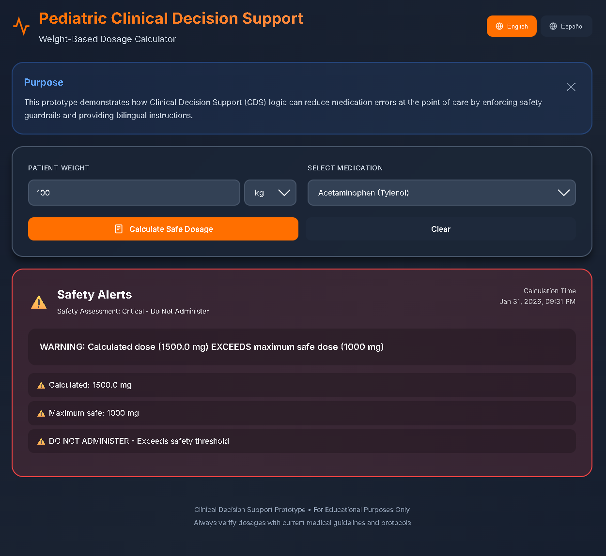
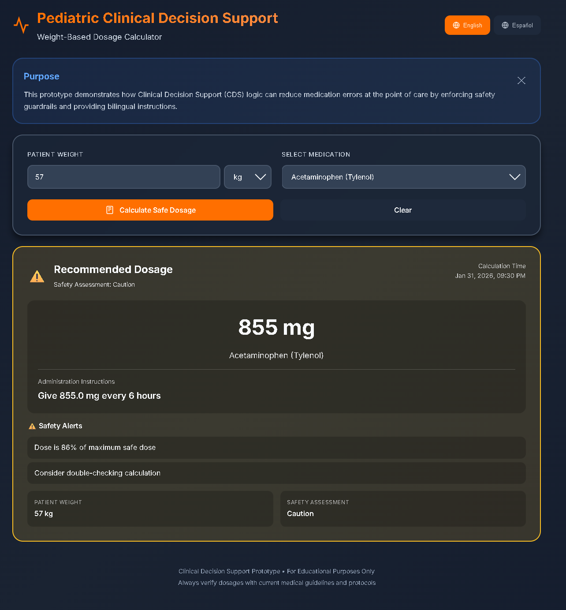
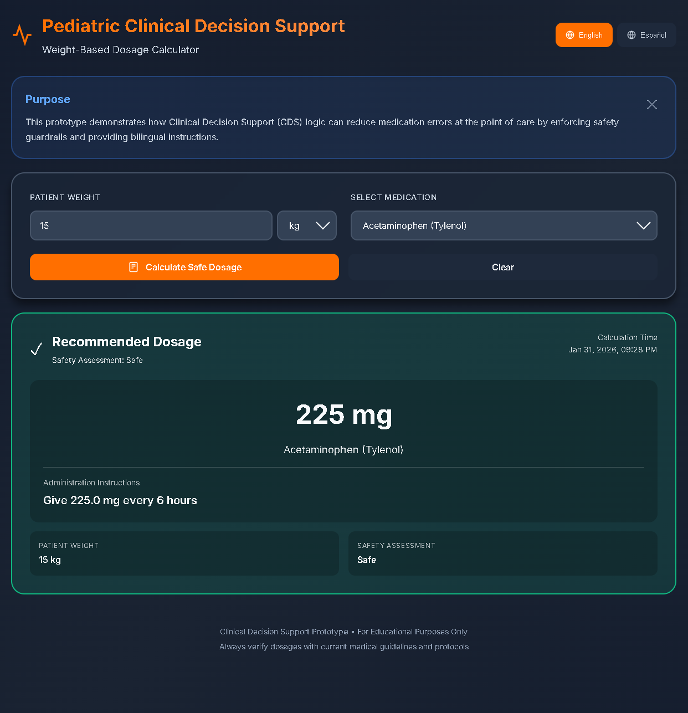
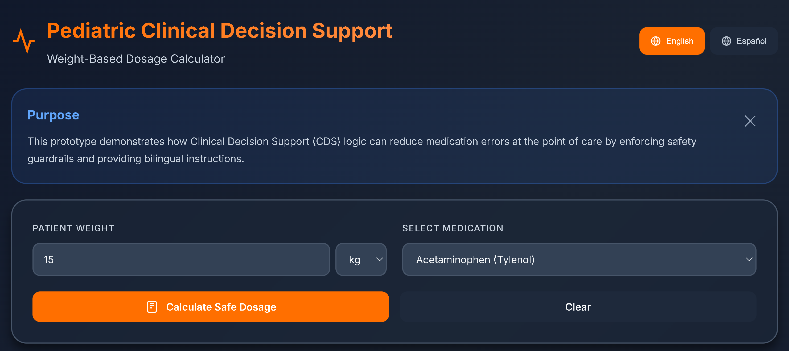

Pediatric Clinical Decision Support (CDS) Dosage Calculator Calculadora de Dosis de Apoyo a Decisiones Clínicas (CDS) Pediátricas
A safety‑critical pediatric medication dosing tool designed to reduce preventable errors in clinical care. The application integrates weight‑based dosing logic, strict clinical guardrails, and a bilingual interface to support safe medication administration for diverse patient populations. It provides validated dosing recommendations for common pediatric medications such as Acetaminophen, Ibuprofen, and Amoxicillin. Una herramienta de dosificación de medicamentos pediátricos crítica para la seguridad diseñada para reducir errores prevenibles en la atención clínica. La aplicación integra lógica de dosificación basada en peso, barreras de seguridad clínicas estrictas y una interfaz bilingüe para apoyar la administración segura de medicamentos para poblaciones de pacientes diversas. Proporciona recomendaciones de dosificación validadas para medicamentos pediátricos comunes como Acetaminofeno, Ibuprofeno y Amoxicilina.

Critical Safety Alert System Sistema de Alerta de Seguridad Crítica
When a calculated dose exceeds maximum safe thresholds, the system immediately displays a critical red alert with explicit "DO NOT ADMINISTER" warnings. This hard stop prevents potential overdoses and sentinel events that could result in serious patient harm. Cuando una dosis calculada excede los umbrales máximos de seguridad, el sistema muestra inmediatamente una alerta roja crítica con advertencias explícitas de "NO ADMINISTRAR". Esta parada completa previene posibles sobredosis y eventos centinela que podrían resultar en daño grave al paciente.
Safety Level: CRITICAL — The most severe alert, indicating the calculated dose exceeds the medication's maximum safe limit. Administration is explicitly contraindicated. Nivel de Seguridad: CRÍTICO — La alerta más severa, indicando que la dosis calculada excede el límite máximo seguro del medicamento. La administración está explícitamente contraindicada.
The red border and explicit warning language create an unmistakable visual cue that demands immediate attention and prevents accidental administration of unsafe doses. El borde rojo y el lenguaje de advertencia explícito crean una señal visual inconfundible que exige atención inmediata y previene la administración accidental de dosis inseguras.

Caution Zone Alerts Alertas de Zona de Precaución
Yellow caution alerts appear when doses approach safety limits (typically 75-90% of maximum safe dose). These alerts prompt clinicians to double-check calculations and verify patient weight before administration, adding an important layer of verification without completely blocking the workflow. Las alertas de precaución amarillas aparecen cuando las dosis se acercan a los límites de seguridad (típicamente 75-90% de la dosis máxima segura). Estas alertas solicitan a los clínicos que verifiquen los cálculos y confirmen el peso del paciente antes de la administración, agregando una capa importante de verificación sin bloquear completamente el flujo de trabajo.
Safety Level: CAUTION — Dose is within safe parameters but approaching the upper limit. Requires careful verification before administration. Nivel de Seguridad: PRECAUCIÓN — La dosis está dentro de los parámetros seguros pero se acerca al límite superior. Requiere verificación cuidadosa antes de la administración.
This graduated alert system helps reduce alert fatigue while maintaining critical safety checks for high-risk dosing scenarios. Este sistema de alerta graduado ayuda a reducir la fatiga de alertas mientras mantiene controles de seguridad críticos para escenarios de dosificación de alto riesgo.

Safe Dosage Confirmation Confirmación de Dosis Segura
Green indicators confirm safe dosing within therapeutic ranges, providing clear administration instructions and confidence to clinicians during medication preparation. The checkmark icon and green border create positive reinforcement for correct dosing. Los indicadores verdes confirman la dosificación segura dentro de los rangos terapéuticos, proporcionando instrucciones de administración claras y confianza a los clínicos durante la preparación de medicamentos. El ícono de verificación y el borde verde crean refuerzo positivo para la dosificación correcta.
Weight-Based Dosing Logic Lógica de Dosificación Basada en Peso
The calculator accepts patient weight in kg or lb, automatically converts to standardized units, and enforces strict validation (pediatric weight range: 2–100 kg). The dose is calculated using the formula: dose = weight (kg) × dosing rate (mg/kg), with automatic capping at maximum safe limits. La calculadora acepta el peso del paciente en kg o lb, convierte automáticamente a unidades estandarizadas y aplica validación estricta (rango de peso pediátrico: 2–100 kg). La dosis se calcula usando la fórmula: dosis = peso (kg) × tasa de dosificación (mg/kg), con limitación automática en los límites máximos seguros.

Complete Clinical Interface Interfaz Clínica Completa
The full calculator interface includes weight-based input with unit selection (kg/lb), medication dropdown with common pediatric drugs (Acetaminophen, Ibuprofen, Amoxicillin), and a bilingual purpose statement explaining the Clinical Decision Support logic for reducing medication errors. La interfaz completa de la calculadora incluye entrada basada en peso con selección de unidades (kg/lb), menú desplegable de medicamentos con medicamentos pediátricos comunes (Acetaminofeno, Ibuprofeno, Amoxicilina) y una declaración de propósito bilingüe que explica la lógica de Apoyo a Decisiones Clínicas para reducir errores de medicación.
Supported Medications: Acetaminophen (15 mg/kg, max 1000mg), Ibuprofen (10 mg/kg, max 600mg), Amoxicillin (20 mg/kg, max 500mg) Medicamentos Soportados: Acetaminofeno (15 mg/kg, máx 1000mg), Ibuprofeno (10 mg/kg, máx 600mg), Amoxicilina (20 mg/kg, máx 500mg)
Instant Language Switching Cambio de Idioma Instantáneo
The bilingual toggle enables instant switching between English and Spanish without losing form state or calculated results. This feature improves health equity and reduces communication-related medication errors for diverse patient populations, particularly in emergency settings where clear communication is critical. El cambio bilingüe permite el cambio instantáneo entre inglés y español sin perder el estado del formulario o los resultados calculados. Esta característica mejora la equidad en salud y reduce errores de medicación relacionados con la comunicación para poblaciones de pacientes diversas, particularmente en entornos de emergencia donde la comunicación clara es crítica.
Bilingual Instruction Generation Generación de Instrucciones Bilingües
The system generates dosing instructions in both English and Spanish simultaneously, ensuring families and caregivers receive clear guidance in their preferred language. This is particularly important for discharge instructions and home medication administration. El sistema genera instrucciones de dosificación en inglés y español simultáneamente, asegurando que las familias y cuidadores reciban orientación clara en su idioma preferido. Esto es particularmente importante para instrucciones de alta y administración de medicamentos en el hogar.
Executive Summary Resumen Ejecutivo
The Pediatric CDS Dosage Calculator is a human‑centered, bilingual clinical tool that automates complex pediatric dosing calculations. It enforces strict safety guardrails — including weight validation, mg/kg logic, and maximum dose capping — to prevent sentinel events such as 10‑fold overdoses. La Calculadora de Dosis CDS Pediátrica es una herramienta clínica bilingüe centrada en el ser humano que automatiza cálculos complejos de dosificación pediátrica. Aplica barreras de seguridad estrictas, incluyendo validación de peso, lógica de mg/kg y limitación de dosis máxima, para prevenir eventos centinela como sobredosis de 10 veces.
The interface is built using a WCAG 2.1 AA compliant Electric Tangerine dark‑mode theme, optimized for high‑stress clinical environments. The system outputs simultaneous English and Spanish instructions, improving health equity and reducing communication‑related medication errors. La interfaz está construida usando un tema de modo oscuro Electric Tangerine compatible con WCAG 2.1 AA, optimizado para entornos clínicos de alto estrés. El sistema genera instrucciones simultáneas en inglés y español, mejorando la equidad en salud y reduciendo errores de medicación relacionados con la comunicación.
Background & Problem Statement Antecedentes y Planteamiento del Problema
Pediatric medication dosing is uniquely error‑prone because nearly all medications require weight‑based calculations. Common failure points include: La dosificación de medicamentos pediátricos es particularmente propensa a errores porque casi todos los medicamentos requieren cálculos basados en peso. Los puntos de falla comunes incluyen:
Decimal point misplacement leading to 10× overdoses. Desplazamiento del punto decimal que lleva a sobredosis de 10×.
Failure to cap doses at safe adult maximums. Falta de limitación de dosis en máximos seguros para adultos.
Language barriers between clinicians and non‑English‑speaking families. Barreras de idioma entre clínicos y familias que no hablan inglés.
Cognitive overload in emergency settings, where manual calculations are error‑prone. Sobrecarga cognitiva en entornos de emergencia, donde los cálculos manuales son propensos a errores.
Clinical Guardrails & Safety Features Barreras de Seguridad Clínicas y Características de Seguridad
Guardrail 1 — Input Sanitization Barrera de Seguridad 1 — Sanitización de Entrada
Validates weight is positive and within pediatric range (2-100 kg), converts lb to kg if necessary, and rejects malformed or malicious inputs via strict Pydantic validation. This prevents calculation errors from invalid data. Valida que el peso sea positivo y esté dentro del rango pediátrico (2-100 kg), convierte lb a kg si es necesario y rechaza entradas malformadas o maliciosas a través de validación estricta de Pydantic. Esto previene errores de cálculo por datos inválidos.
Guardrail 2 — Dose Calculation and Capping Barrera de Seguridad 2 — Cálculo y Limitación de Dosis
Calculates mg/kg dose using standardized formulas, automatically caps dose at medication's maximum safe limit, and assigns a safety level (SAFE, CAUTION, or CRITICAL) based on percentage of maximum dose. This multi-layered approach prevents both underdosing and overdosing. Calcula la dosis de mg/kg usando fórmulas estandarizadas, limita automáticamente la dosis al límite máximo seguro del medicamento y asigna un nivel de seguridad (SAFE, CAUTION o CRITICAL) basado en el porcentaje de la dosis máxima. Este enfoque multicapa previene tanto la subdosificación como la sobredosificación.
Result Display Visualización de Resultados
Color‑coded safety indicators (green, yellow, red), clear dosing instructions with explicit warnings for CAUTION or CRITICAL states, and bilingual output ensure clinicians can quickly assess safety and communicate clearly with families. Indicadores de seguridad codificados por colores (verde, amarillo, rojo), instrucciones de dosificación claras con advertencias explícitas para estados de PRECAUCIÓN o CRÍTICO, y salida bilingüe aseguran que los clínicos puedan evaluar rápidamente la seguridad y comunicarse claramente con las familias.
Security & Accessibility Seguridad y Accesibilidad
Security Considerations Consideraciones de Seguridad
Stateless API design ensures no PHI is stored or logged. Strict Pydantic validation prevents malformed or malicious inputs. SafetyLevel enforcement ensures the UI must handle CAUTION/CRITICAL states explicitly, and no external data transmission occurs beyond the calculation request. El diseño de API sin estado garantiza que ningún PHI se almacene o registre. La validación estricta de Pydantic previene entradas malformadas o maliciosas. La aplicación de SafetyLevel garantiza que la interfaz debe manejar estados de PRECAUCIÓN/CRÍTICO explícitamente, y no ocurre transmisión de datos externa más allá de la solicitud de cálculo.
Accessibility Features Características de Accesibilidad
WCAG 2.1 AA compliant dark mode reduces eye strain in clinical environments, JSON‑based i18n system (en.json / es.json) enables instant language switching without losing form state, clear visual hierarchy supports rapid clinical scanning, and inclusive instructions are designed for Spanish‑speaking families. Modo oscuro compatible con WCAG 2.1 AA reduce la fatiga ocular en entornos clínicos, sistema i18n basado en JSON (en.json / es.json) permite cambio de idioma instantáneo sin perder el estado del formulario, jerarquía visual clara soporta escaneo clínico rápido, y las instrucciones inclusivas están diseñadas para familias de habla hispana.
Measurable Impact Impacto Medible
Eliminates Calculation Fatigue Elimina la Fatiga de Cálculo
Automates complex weight-based calculations in high‑volume pediatric settings, reducing cognitive load and human error. Automatiza cálculos complejos basados en peso en entornos pediátricos de alto volumen, reduciendo la carga cognitiva y el error humano.
Standardizes Care Estandariza la Atención
Enforces consistent clinical rules across all providers, eliminating practice variation and ensuring evidence-based dosing. Aplica reglas clínicas consistentes en todos los proveedores, eliminando variación de práctica y asegurando dosificación basada en evidencia.
Improves Health Equity Mejora la Equidad en Salud
Provides bilingual instructions that reduce communication-related medication errors for Spanish-speaking families. Proporciona instrucciones bilingües que reducen errores de medicación relacionados con la comunicación para familias de habla hispana.
Prevents Sentinel Events Previene Eventos Centinela
Critical alerts prevent overdoses and unsafe doses before administration, reducing risk of serious patient harm. Las alertas críticas previenen sobredosis y dosis inseguras antes de la administración, reduciendo el riesgo de daño grave al paciente.
Technology Stack Pila Tecnológica
Frontend: HTML5, CSS3 (Custom Properties for theming), JavaScript (ES6+), Inter font family for readability Frontend: HTML5, CSS3 (Propiedades Personalizadas para tematización), JavaScript (ES6+), Familia de fuentes Inter para legibilidad
Backend: FastAPI (Python 3.x), Pydantic for validation, Uvicorn ASGI server Backend: FastAPI (Python 3.x), Pydantic para validación, servidor ASGI Uvicorn
Data Structures: JSON‑based localization files (en.json / es.json), RESTful API responses with safety metadata Estructuras de Datos: Archivos de localización basados en JSON (en.json / es.json), Respuestas de API RESTful con metadatos de seguridad
Standards: WCAG 2.1 AA compliance, pediatric dosing guidelines from AAP and FDA Estándares: Cumplimiento WCAG 2.1 AA, pautas de dosificación pediátrica de AAP y FDA